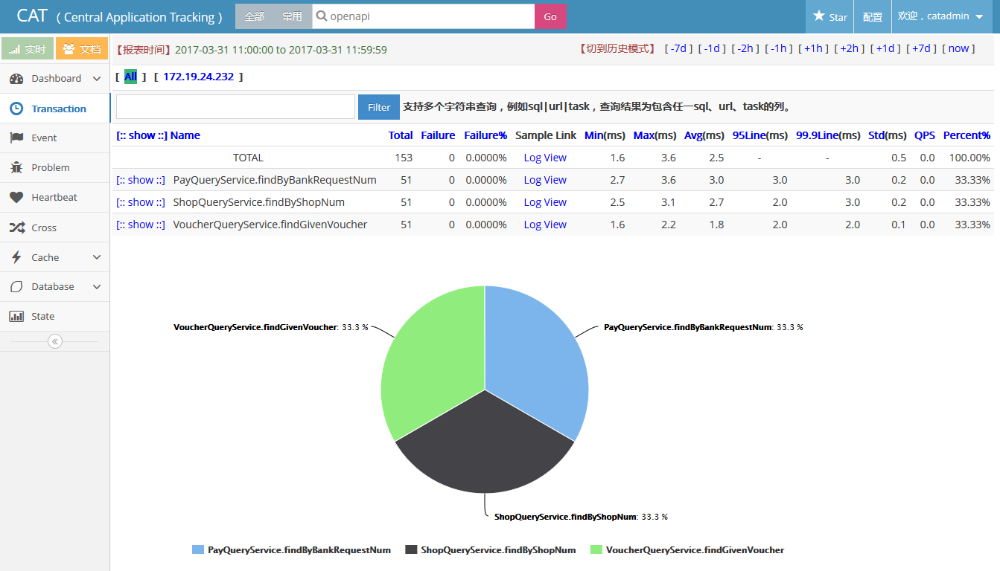
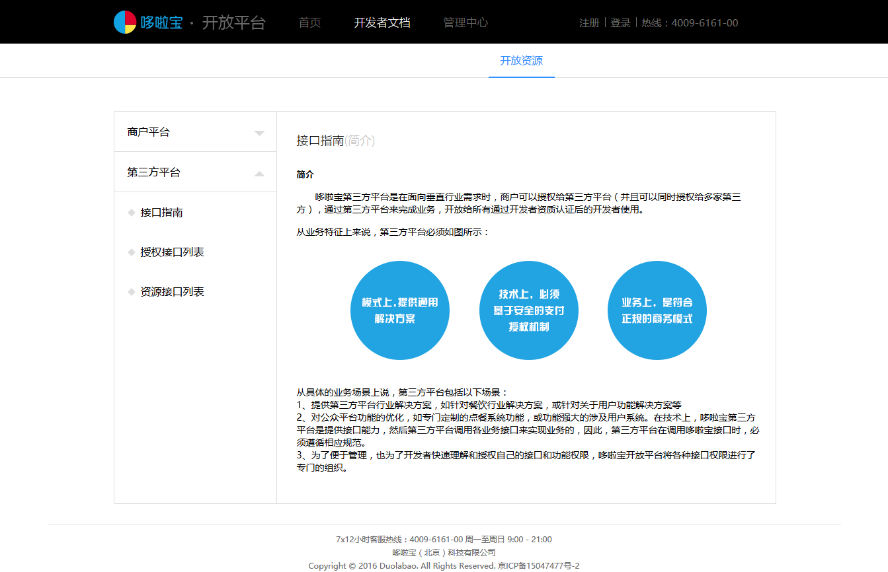
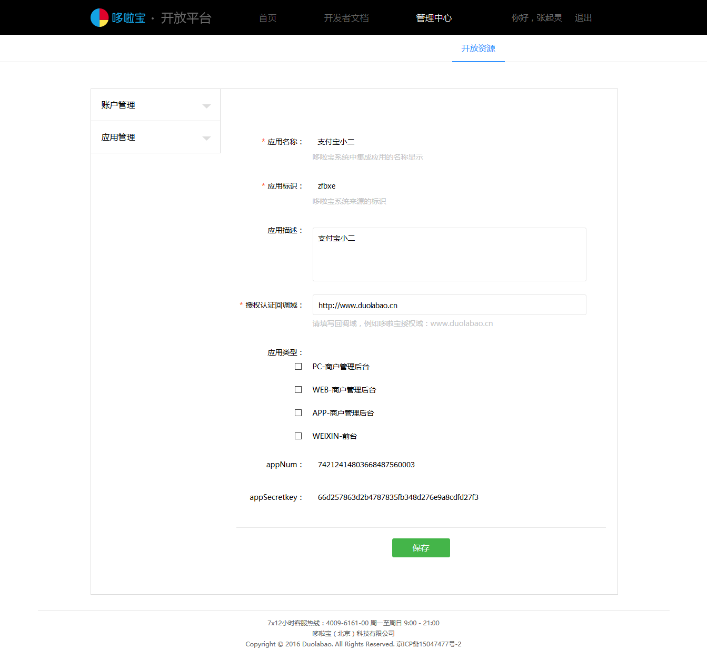

-
- Basic info. 基本信息
- 个人信息: 魏诚东 / 男 / 25岁
- 工作年限: 4年
- 常用ID: 魏诚东
- Blog: https://chengdongwei.github.io/
- GitHub: https://github.com/chengdongwei
-
- Experience. 项目与工作经验
哆啦宝(北京)科技有限公司（2016.04 - 至今）
-
分布式实时监控系统（2017.02-2017.03）
由于业务不断发展系统和服务逐渐增多，系统问题和业务异常需要根据邮件定位或者人工排查，业务量没有完善的统计。分布式实时监控系统基于开源cat实时应用监控平台，实现了应用对日志进行收集传输，服务端对消息消费进行分析存储和展示，包括实时应用监控、业务监控，以及详细的调用链、业务指标、性能指标
主要职责
1. 结合现有监控开源框架进行技术选型，快速实现现有业务问题，保证系统可扩展、实时处理

2. 封装集成框架和业务指标，便于系统、服务和具体业务直接引用，降低现有代码之间耦合
3. 制定上线部署方案，列出所需配置和集群配置，确保上线不影响现有业务系统
4. 建立并协调组员实施业务系统，实现业务系统和服务监控
5. 后期分析现有系统和服务调用量，规划存储和水平扩展方案，提高监控系统高可用、高吞吐能力 -
广告系统（2016.12-2017.01）
广告系统包括广告发布管理系统和广告内部系统，是面向用户投递广告的系统，为用户提供增值服务，广告发布管理系统可以帮助运营人员实现广告管理、广告配置、广告白名单、统计等功能。广告内部系统提供接口服务，订单系统在支付页面跨域请求获得广告数据，实现用户在扫码支付时展示广告
主要职责
1. 主要负责广告系统架构设计，保证系统易扩展
2. 广告系统技术选型，保证快速实现，避免延伸其他严重问题
3. 基于领域模型进行业务接口设计
4. 面向服务系统，系统间通过暴露dubbo接口通信，负责抽取系统服务、业务服务
5. 负责协调组员，定期反馈、解决遇到障碍、互相进行codereview，保障项目按期完成目标 -
核心支付业务优化（2016.11-2016.12）
现有支付业务环节入口、核心业务调用、回调业务都在订单系统，容易造成系统达到瓶颈，业务过于耦合。确认业务边界，对业务划分后进行剥离，将核心的业务揉合到交易组件中，回调业务抽取到组件中，抽取支付相关的共用业务模块以便复用。目的降低订单系统压力、解耦系统之间关系和提高稳定性
主要职责
1. 分析系统存在问题、梳理系统之间调用，进行组件和模块调用关系设计
2. 按照设计进行抽取，分别为交易组件、回调组件以及共用业务模块
3. 配合测试部列出改造覆盖点和详细的测试用例，确保上线不影响现有业务和老业务系统 -
开放平台（2016.06-2016.11）
开放平台包含商户平台、应用平台和管理平台。商户平台是提供支付接口能力的行业解决方案，支持代理商和商户合作模式，在管理平台获取密钥和相关业务参数，完成支付、报单相关业务接口对接。应用平台是提供与第三方产品对接的能力，具备开发能力的服务商入驻开放平台,需要在管理平台注册开发者、获取密钥、申请应用、完善应用信息、根据应用平台提供的资源接口进行开发、上线应用、运营管理审核应用、商户管理应用、推送支付消息打印功能、集成微信扫码入口、一系列授权接口流程等功能
主要职责
1. 负责商户平台、管理平台和开发者中心文档平台架构设计，便于开发者自主申请和开发，同时满足了现有支付场景对接
 
2. 负责商户平台进行详细的系统、业务接口和文档设计及开发
3. 针对主扫、被扫、退款等支付业务抽取到组件，便于订单系统和openapi系统调用
4. 负责应用平台架构设计，便于服务商自主申请和开发应用，保证系统了可扩展、安全性
5. 针对应用平台项目制定计划对管理平台、授权系统、资源系统设计及开发
6. 后期对服务商的对接进行技术支持和联调 -
优惠券系统（2016.04-2016.06）
为了协助商户方便实现营销优惠提供了优惠券增值服务。商户创建优惠券发放，提供查看消费记录、数据分析、优惠券推送，用户扫码收到推送消息领取优惠券，扫码支付使用优惠券
主要职责
1. 封装双向签名、鉴权、异常、json处理到基础二方库，规范系统请求和响应规范
2. 参与优惠券系统设计，实现避免与支付业务系统耦合以及可扩展性
3. 参与业务接口、数据统计、推送设计及开发
4. 后期优化优惠券系统，保证系统的健壮性和可靠性
新华保险（2014.04 - 2016.04）
-
福利商城（2015.09-2016-01）
福利商城项目，主要为企业及员工提供了一个快捷、高效、个性化的整体福利解决方案，后台包含用户管理、商品管理、类目管理、库存管理、订单管理、供应商管理、积分管理等，很大程度上分担了人工的压力，前台包括个人中心，消息中心、员工管理、福利管理、企业管理、购物车，商城首页，商品详情页，提交订单页等页面构成，帮助企业的合理规划福利分配，节约企业成本员工，实现个性化的福利需求，提升员工的满意度，起到了较好的作用
主要职责
1. 运营后台商品管理、属性管理、商品添加审核、用户管理、角色管理等功能模块开发
2. 商城首页商品列表筛选、热门福利包和单品页面、商品搜索功能开发
3. 员工管理页面个人信息、安全中心、账号管理、收货地址等
4. 企业管理页面员工管理、员工关联企业管理、安全中心、个性化设置、收货地址等
5. 消息提示页面根据不同群体用户显示相应的消息以及对应的操作等功能
6. 商品加入购物车、提交订单等页面开发 -
积分商城（2015.01-2015.09）
结合新华电商情况，拟通过积分平台项目建设，逐步建立面向新华电商各平台用户并可接入其他第三方平台用户的通用积分体系。构建积分平台，以用户需求为切入点，首先抓住用户较为清晰的兑换诉求，通过积分平台引导用户消费行为，增强用户黏性和忠诚度。平台接口包括积分接口，会员接口，供应商接口。商城包括首页、列表页、详情页、购物车、结算中心、专题活动，会员中心、注册/登录、帮助中心。后台包括运营管理、系统管理两大块
主要职责
1. 会员登录功能，通过shiro安全框架完成授权/认证
2. 添加商品，购物车功能根据Cookie数据为主抽取相应工具类，完成相应的操作
3. 秒杀活动，采用队列思路将请求加入指定的池中完成业务操作
4. 后期主要根据产品部提出新功能需求和专题活动页进行开发
5. 实现批量导出功能，可按照条件将数据进行大批量导出 -
用户管理平台（2014.06-2014.12）
为建立用户管理系统的目的就是使同一产品群内的不同应用的用户认证工作集中在一起，通过一个公用的、能跨不同应用的用户系统统一管理和验证用户的身份。产品群内各应用使用统一的用户系统，通过统一的内部接口或公共页面与统一用户系统对接（各应用可根据自己的需求确定是用接口还是直接用公共面），用户的注册、登录、找回密码以及基本信息管理、账户安全设置等账户操作都在统一用户系统完成，用户的基本信息和账户操作日志都保存在统一用户系统中；用户的业务操作在各应用中完成，业务数据和业务操作日志保存在各应用系统中
主要职责
1. 整个系统分为3块开发，接口开发、PC和WAP端开发
2. 登录接口，业务系统可以使用UUP的页面进行登录，也可以使用自己的页面调用UUP提供的接口进行登录，登录成功后UUP会生成一个唯一的ticket，业务系统后台调用UUP的校验ticket接口进行校验，校验通过，UUP会返回登录用户的信息，业务系统根据自身需要做登录相关处理
3. 校验ticket接口，用户登录成功后将生成ticket追加到用户访问前地址，请求UUP校验ticket，ticket验证通过，销毁ticket，返回登录用户信息
4. 短信验证接口，发送短信时限定页面场景，通过redis限制发送频率、每天次数、错误次数等，将生成的验证码按照短信接口格式封装参数发送请求
5. 邮箱验证接口，发送邮箱时限定页面场景，在spring中注入邮件接口，结合Freemark技术生成html，通过邮件接口将其发送
6. 密码重置和找回接口，首先进行手机或者邮箱验证，通过验证后将用户和场景拼接参数存放redis中，修改密码时获取该拼接后的参数通过用户名查找该用户修改密码。页面流程中每个页面要要有依赖性
-
- Skill. 技能清单
服务端技能点
-
Java基础
OOP、集合、IO流、线程、并发、设计模式、JVM调优技术等
-
Web基础技术
Servlet、JSP、XML、Ajax等
-
框架技术
Spring、SpringMVC、Mybatis/其他框架：SpringBoot、Shiro等
-
数据库技术
Mysql、MongoDB/缓存：Redis等
-
中间件技术
Dubbo、ZooKeeper、MQ、Netty等
-
高可用、高并发架构
负载均衡(失败重试机制/健康检查机制/动态负载均衡)、限流(应用级限流/分布式限流)、超时重试(中间件超时/业务超时)
缓存(应用缓存/http缓存/多级/连接池)、异步(同步阻塞调用/异步Future/异步Callback/异步编排)、队列(异步处理/任务队列/消息队列/请求队列/数据总线队列)
-
- Acknowledgements. 致谢
- 感谢您花时间阅读我的简历，期待能有机会和您共事

魏诚东的简历
"Write the Code. Change the World."
-
- Contact. 联系方式
- 邮箱: chengdwei@gmail.com
- 微信: nightsky128
- QQ: 506488351
-
- Application. 应聘岗位
- 服务端开发(Java)
-
- Tech. 技能点
JavaSEWeb技术框架技术中间件数据库其他
执着于对技术的研究、善于发现问题并解决。
目前正在寻找Java服务端开发岗位，期待能有机会和您共事！